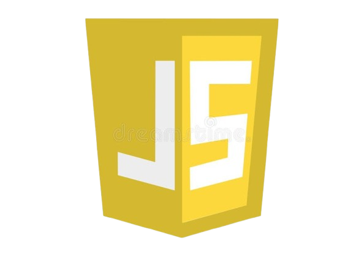

HTML : Expertise d'intégration web
Avec une solide expérience en HTML, j'ai développé une compréhension approfondie des structures de pages web, de la mise en page et de l'accessibilité. Mon approche est toujours centrée sur l'optimisation de l'expérience utilisateur et la création de contenus web bien structurés et performants.

CSS : Expertise en conception visuelle et mise en page
Je suis passionné par le développement web, et je considère HTML et CSS comme des outils puissants pour donner vie à des idées. Avec HTML, je maîtrise la structure de tout site web, en veillant à ce qu'il soit à la fois clair, accessible et optimisé pour tous les utilisateurs. En CSS, je suis capable de créer des mises en page modernes et réactives, en jouant avec les styles, les animations et la disposition pour rendre l’expérience utilisateur aussi fluide et agréable que possible.

JS : Expertise côté client
JavaScript est un langage incontournable du côté client, qui permet de rendre les sites web interactifs et dynamiques. Il offre une grande flexibilité et de nombreuses possibilités pour créer des expériences utilisateur riches et fluides. Plus je travaille avec JavaScript, plus je constate sa puissance et sa capacité à résoudre des défis complexes de manière élégante. Chaque jour, je renforce ma maîtrise de ce langage, et je suis convaincu qu’il ouvre des portes vers un développement web toujours plus performant et innovant.

PHP : Expertise côté serveur
PHP est un langage que je maîtrise parfaitement pour le développement côté serveur. Grâce à des expériences pratiques, de jour comme de nuit, j'ai pu affiner mes compétences et développer des solutions robustes et efficaces. Mon expertise en PHP me permet de créer des applications web performantes, sécurisées et évolutives. Avec chaque projet, je continue à perfectionner mes capacités et à exploiter pleinement le potentiel de ce langage pour offrir des solutions adaptées aux besoins spécifiques des utilisateurs.